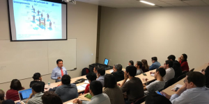
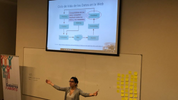
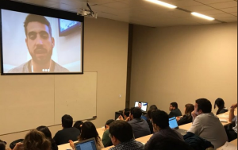

Chile si va al mundial
... al mundial del Gobierno Abierto. Chile está a la cabeza de los Gobiernos Abiertos por una serie de hechos y políticas interesantes que en general no es totalmente dimensionada por sus ciudadanos. Es muy común en Latinoamérica desmerecer nuestros logros.
Chile tiene ya una tradición en políticas de Gobierno Abierto y los demás países de Latinoamérica lo vemos como referente en el tema. Recuerdo su portal nacional de datos abiertos lanzado en 2011 como a uno de los primeros (* inserte aquí referencia a la fecha de creación de los otros países). Trabajo en temas de datos abiertos desde 2012 y siempre Chile, sus instituciones y municipios se destacaron en estos temas. Muchos otros países han avanzado muchísimo en estos temas, no quiero desmerecer a ninguno, solo creo que Chile es destacable. Se me vienen a la memoria además los trabajos de la Fundación Ciudadano Inteligente y al prócer académico del Gobierno Abierto Álvaro Ramirez-Alujas pero seguramente hay mucho más para destacar.
Estuvimos (junto a mi compañero de trabajo Facundo) durante una semana en Santiago de Chile asistiendo a la Escuela de Gobierno Abierto organizado por GIGA (organizado por un muy interesante equipo) y pude verlo un poco de más cerca. En el curso conversamos y aprendimos de algunos de sus funcionarios que se acercaron a contarnos sus experiencias. Comparto un resumen basado en las notas (personales y caóticas) del curso.
Clase 1 - Lunes 9 de abril.
Raúl Ferrada Carrasco, Director General del Concejo para la transparencia de Chile vino a contarnos de su trabajo.

Este Concejo es una institución nacional con una fuerte autonomía. Esta institución tiene potestad de hacer multas directas sobre el sueldo del funcionario que no cumple las normas de transparencia. Muestra de esta autonomía es que han llegado poner multa al jefe de la Fuerza Aérea de Chile (FACH) por no entregar información de la lista de personas que bombardearon la casa de la moneda (Oficio completo, no conozco un ente nacional que tenga este poder en otros países del mundo).
El Concejo participa también de los compromisos con OGP y sirve como entidad para reclamar la no respuesta en pedidos de acceso a la información (lleva además estadísticas detalladas de esto). Nos contó de su trabajo y de sus desafíos.
Clase 1 - Parte 2 - Acceso a la información pública
Romina Colman nos dio una excelente clase sobre pedido de accesos a la información.
 Acá hay una versión imperdible en video de una exposición similar de Romina en la Escuela de Periodismo en Chile. Romina es parte del equipo de La Nación Data, el mejor de Latinoamérica en periodismo de datos.
https://www.youtube.com/watch?v=e1oa3Dv30h4&feature=youtu.be
Clase 2 - Martes 10 de abril.
Caroline Burle desde Brasil (por Skype) nos conto de su trabajo en Nic.br y cgi.br en (trabaja con estándares W3C). Lamentablemente el streaming se corto :( y no pudimos finalizar de aprender sobre web semántica y estándares en datos.
Clase 3 - Miércoles 11 de abril. Participación Ciudadana con Manuel Barros.
Manuel es Coordinador de proyectos de Ciudadano Inteligente y vinculado a OGP.

Nos dice que sin participación no hay gobierno abierto, si un gobierno dispone herramientas pero no hay nadie que use, valide y colabore realmente no es un gobierno abierto. Hoy hay mucho de herramientas y datos pero todavía poco de participación.
Latinobarometro y el Banco Mundial dicen que se incrementa la desconfianza en los gobiernos. Dice Manuel que hablar de Gobierno Abierto real todavía es iluso. La sociedad tiene baja formación ciudadana, hay poco interés en saber, fiscalizar y participar. Propone que la participación tiene que ser vinculante.
Manuel dice que no todo es negativo y destaca:
- En Chile existe la ley 20.500 de participación ciudadana
- En ley orgánica de municipios hay 4 o 5 métodos descritos (plebiscitos, consultas públicas, etc)
- Hay presupuesto participativo en muchas ciudades
- Bolivia, Ecuador, Nicaragua, Venezuela y otros hay seguimiento y participación en presupuestos
- Nariño y Bs As ya trabajan con la plataforma Consul de Madrid
- Uso políticos del oficialismo (para neutralizar la oposición con procesos falsos y cosméticos).
- Cooptación de los espacios de participación por organizaciones de la sociedad civil o sectores específicos.
- Disminución de la eficiencia. La participación es menos eficiente en general. Es más cara y más lenta. A veces detiene iniciativas interesantes.
- Falta de la interés en la ciudadanía.
Manuel marca los puntos necesarios para el éxito en la participación ciudadana:
- Tiene que haber voluntad política
- Existencia de una sociedad civil organizada (esto como regla general, sin esto no hay gobierno abierto posible)
- Diseños institucionales flexibles y ligeros (que tenga un pequeño piloto, que avance en etapas, que se pueda modificar por procesos participativos).
- Necesidad de capacidades técnicas en los mandos medios para ejecutar los planes de acción participativos.
En la experiencia de Ciudadano inteligente implementaron la plataforma Cónsul pero le agregaron etapas posteriores donde los participantes tienen tareas. Estas eran de mantenimiento y fiscalización (control y reclamos) a la implementación del proyecto. No se queda con la participación y compromiso del gobierno de ejecutar, acompaña además todo el proceso posterior. Esto alguna manera fuerza a la gente a que se comprometa en lo que participó. Hicieron procesos vinculantes A CONDICIÓN de que la gente firme su corresponsabilidad en algunas tareas.
Manuel nos cuenta que en el tercer plan de acción de Chile se creo una mesa de Gobierno, Academia (Alujas), Sociedad Civil (Manuel Barros) para dar seguimiento. Para el cuarto plan ya están más fortalecidos y habrá espacios de debate en varias regiones de Chile.
Algunos tips de Manuel:
- La tecnología civica es clave
- Decide Madrir (Consul) es muy potente.
- En Montreal se juntan todos los jueves a hacer hackatones y es una buena experiencia.
- "Wi the people" en USA (no sabe si sigue) pero fue potente.
- Londres el departamento de transporte lanza permanentemente consultas a los usuarios.
- Critica a Madrid: Solo dos propuestas ciudadanas han llegado al 1% de apoyo requerido y todavía ninguna se ejecutó. Algo bueno: Están probando cosas nuevas. Van a crear una segunda cámara (ademas de los concejales). Esta cámara esta formada por ciudadanos (al azar al parecer).
Recomendación de Manuel: Abrir desafíos CONCRETOS sobre políticas específicas. No tanto recibir propuestas cualquiera. Ver que ya tenga presupuesto y solo haya que decidir una vía. Manuel quiere que sea VINCULANTE.
Clase 3 - Parte 2
Analizamos políticas públicas específicas de participación en equipos y las compartimos a la clase. Muy enriquecedor.

Concepto interesante.
Se puede evaluar la participación en 3 o 4 dimensiones (según OCDE)
- Informativo
- Consultivo
- (Deliberativo)
- Participativo
Clase 4 - Jueves 12 de abril - Juan Felipe López, Director ejecutivo del Laboratorio de Gobierno de Chile.
Felipe es historiador e ingreso a este cargo por concurso en la gestión anterior (y aún sigue).

Esto se lo pregunté al final ya que me daba mucha curiosidad saber como accedían los funcionarios a puestos tan importantes en Chile. El Lab le responde a un directorio de ministerios, la Corfo y otras instituciones. No tiene vencimiento en su cargo pero el directorio puede sacarlo y designar a otro en cualquier momento.
Felipe nos sugiere que los gobiernos trabajan sobre los ejes de las palabras y los datos mientras que los ciudadanos se manejan sobre los ejes de las historias y las imágenes. He ahí una primera desconexión entre gobierno y ciudadanos
Una falla principal de los gobiernos es que muchas buenas ideas finalmente no son útiles para las personas. Falta más validación y consulta. Este laboratorio es un lugar para experimentar políticas o herramientas antes de avanzar a fondo en ellas. El lab busca un estado innovador al servicio de las personas y está inspirado en laboratorios de México y Bs As.
Tips de Felipe:
- Foco en las personas
- Foco en la experiencia: todo el ambiente tiene que ser distinto. Los que participan tienen que tener un espacio atractivo y convocante.
- Enfoque sistémico: Conocer de todo lo que rodea a lo que se esta elaborando.
- Co-creación: Una persona no tiene que hacer todo, tiene que estar abierto a equipos interdisciplinarios y a los usuarios.
Se reviso todo el proceso de definición de políticas públicas. Necesidad - evidencia - planificación - implementación - evaluación (posiblemente me olvidé alguna) y se les agregaron herramientas nuevas a todas las etapas. No se cambia el fondo pero para cada etapa se hacen sugerencias innovadoras. De esta forma el proceso de definición de políticas públicas se enriquece.
Toda este proceso de actividades tiene momentos de divergencia donde se puede volar un poco y etapas de convergencia donde se agrupa y se concretan cosas. Esto es clave, no hay que perder el foco.
Ejemplo: Cuentas claras - simples y transparentes junto a la Superintendencia de Electricidad y Combustibles de Chile. Se implemento sobre la boleta de la luz.
Problema "El 51% no entiende la boleta de la luz" (en Chile hay 34 empresas eléctricas, 1 de ellas distribuye el 80%).
Solución propuesta: Se les instruyo a las empresas para que AGRANDEN LA LETRA de la boleta (?). Demuestra la precariedad y falta de validación de como se toman las decisiones. No se midió el resultado.
El laboratorio volvió más atrás en el proceso. Se hicieron talleres en siete regiones sobre cual era su experiencia con la cuenta de la luz.
- Notaron que:
- La gente no entiende muchas palabras, estaba escrita por abogados
- La gente no entiende el servicio (decía sistema troncal y pensaron que era del transporte de pasajeros)
- Les daba desconfianza, no creían en las empresas.
Hicieron:
- Preguntaron entonces que datos de la boleta eran clave, se pusieron primero. Se probaron diferentes tipografías.
- Unificaron la misma boleta para las 34 empresas.
- Hicieron UN PILOTO en tres ciudades
- MIDIERON la confianza en el sistema anterior y el nuevo. Subieron en todas las mediciones.
- Le mostraron los resultados al ministro y decidieron extender esto a todo el país.
Todo esto se financió con parte del presupuesto del SEC (ya tenía algo para estos temas) y el laboratorio (que también tiene algo de presupuesto).
¿Cómo eligen los problemas?
El directorio les asignan las tareas. En general reciben pedidos. También pueden pro-activamente solicitar intervenir en algún área pero se dieron cuenta que si no hay un dueño político interesado el proceso no funciona.
Es por esto que si no hay un interesado que va a participar voluntariamente es mejor no hacerlo.
Este Laboratorio hizo un encuentro de innovación pública (dic 2017 en Santiago) donde 400 funcionarios co-organizando talleres y mesas de debate
TODO lo que hacen y los casos están acá: http://lab.gob.cl/el-lab/publicaciones/
Clase 4 - parte 2 - "Colaboración e Innovación Pública" - Silvia Da Rosa
Silvia es Asesora del Laboratorio de Innovación Pública de AGESIC, docente de la Universidad Católica del Uruguay y miembro de la Organización de Sociedad Civil "Datos Abiertos, Transparencia y Acceso a la Información" (DATA).
Trabajamos en equipos para definir correctamente problemas específicos de Gobierno Abierto.
Lamentablemente :( nuestro pasaje de vuelta era antes del horario donde cerrábamos esta clase el viernes por lo que me perdí el final.
Comentarios
Comments powered by Disqus